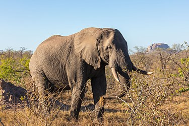

Elefante
Hipervínculos externos
Datos sobre los elefantes
National Geographic
Experto animal
Hipervínculos Internos
Menú
Elefante
Alimentación
Tipos
Características
Habitat
África
Caza
Elefantes
Qué son los elefantes
Los elefantes o elefántidos (Elephantidae) son una familia de mamíferos placentarios del orden Proboscidea. Antiguamente se clasificaban, junto con otros mamíferos de piel gruesa, en el orden, ahora inválido, de los paquidermos (Pachydermata). Existen hoy en día tres especies y diversas subespecies. Entre los géneros extintos de esta familia destacan los mamuts.
Elefante salvaje indio del bosque de Marayoor, Munnar, Kerala.
Cría de elefante africano de sabana (Loxodonta africana), parque nacional Kruger, Sudáfrica.
Los elefantes son los animales terrestres más grandes que existen en la actualidad.El periodo de gestación es de veintidós meses, el más largo en cualquier animal terrestre. El peso al nacer usualmente es 118 kg. Normalmente viven de cincuenta a setenta años, pero registros antiguos documentan edades máximas de ochenta y dos años.El elefante más grande que se ha cazado, de los que se tiene registro, pesó alrededor de 11 000 kg (Angola, 1956),alcanzando una altura en la cruz de 3,96 m, un metro más alto que el elefante africano promedio.El elefante más pequeño, de alrededor del tamaño de una cría o un cerdo grande, es una especie prehistórica que existió en la isla de Creta, Elephas creticus, durante el Pleistoceno.
Con un peso de 5 kg, el cerebro del elefante es el más grande de los animales terrestres. Se le atribuyen una gran variedad de comportamientos asociados a la inteligencia como el duelo, altruismo, adopción, juego, uso de herramientas,compasión y autorreconocimiento.Los elefantes pueden estar a la par con otras especies inteligentes como los cetáceos y algunos primates.Las áreas más grandes en su cerebro están encargadas de la audición, el gusto y la movilidad.

Alimentación
Los elefantes comen raíces, hierba, fruta y corteza, y lo hacen en grandes cantidades. Un elefante adulto puede consumir hasta 135 kilogramos de comida en un solo día. Estos voraces animales no duermen mucho, y recorren grandes distancias en busca de las enormes cantidades de comida que necesitan para sustentar sus ingentes cuerpos.
Tipos
Los elefantes actuales se clasifican en dos géneros distintos, Loxodonta (elefantes africanos) y Elephas (elefantes asiáticos), pertenecientes a dos tribus distintas. Clásicamente se reconocían dos especies, una en cada género, pero actualmente hay un debate entre los científicos sobre si las dos subespecies africanas son en realidad dos especies distintas, en cuyo caso serían en total de tres especies de elefantes.

Característicass
Presentan una prolongación nasal muy desarrollada, denominada probóscide (comúnmente conocida como trompa) que, gracias a su desarrollada musculatura (tiene 150 000 músculos), les da una gran movilidad y sensibilidad. La trompa es la fusión de la nariz y el labio superior del elefante, y le sirve para muchas cosas, además de respirar y oler:
Es tan sensible que puede distinguir formas y texturas al tocar algo.
Emite sonidos (barritos) de diferentes tipos, incluyendo infrasónicos.
Con ella recoge comida, ya sea del suelo o de hasta 6 o 7 m de altura.
La usan para aspirar agua, que luego ponen en su boca para beber o echan en su cuerpo para refrescarse.
A lo largo de la trompa corre el canal nasal, y como tiene el mejor olfato del mundo, la levantan en el aire a fin de percibir olores lejanos.
Los elefantes también poseen colmillos, que en realidad son incisivos; salen de su mandíbula superior y crecen curvos a los lados de la trompa. Les sirven para abrir camino, marcar árboles (una forma de señalar su territorio), escarbar y para atacar y defenderse en caso necesario. Los colmillos de elefante son una gran fuente de marfil, pero debido a la creciente rareza de los elefantes, casi toda la cacería y tráfico son ahora ilegales.
Habitat
Los elefantes de los bosques africanos habitan la densa selva tropical de África occidental y central, mientras que los elefantes de la sabana africana habitan principalmente en las sabanas boscosas y los pastizales del África subsahariana. También difieren físicamente. Los elefantes de la sabana africana son más grandes y sus colmillos se curvan hacia afuera. El elefante africano del bosque es más pequeño, sus colmillos son más rectos y apuntan hacia abajo y tienen orejas más redondeadas.
África
A principios del siglo XX la población de elefantes se acercaba a la cifra de 12 millones de animales. Después de décadas de cacería implacable, dicha población sufrió un colapso extraordinario y en la actualidad quedan 490 mil en todo África. En 1989, la Convención sobre Comercio Internacional de Especies Amenazadas (Cites) decretó la prohibición total de comercio de marfil y eso frenó la cacería furtiva de elefantes. Algunas poblaciones de elefantes pudieron recuperarse
Caza
Según WWF, alrededor del 90% de los elefantes de Selous, en África, ha muerto "a manos de cazadores furtivos", al tiempo que han señalado que "queda mucho por hacer para acabar con este crimen contra la naturaleza".
En 1989, la Convención sobre el Comercio Internacional de Especies Amenazadas de Fauna y Flora Silvestres prohibió el comercio internacional de marfil. "Sin embargo, todavía hay mercados de marfil no regulados, que alimentan un comercio internacional ilegal y a la creciente demanda de los países asiáticos ricos", tal y como ha continuado WWF.